|
2010年1月环洞庭湖图片日记
day6(part B), 2010年1月31日
南县 - 华容县
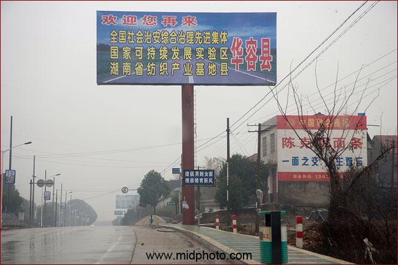
国家可持续发展实验区，这个title比较值得研究
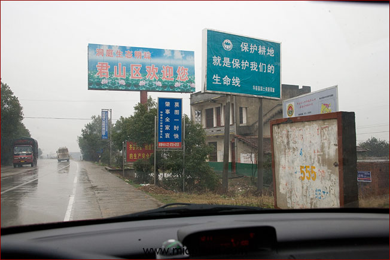
进入岳阳君山区
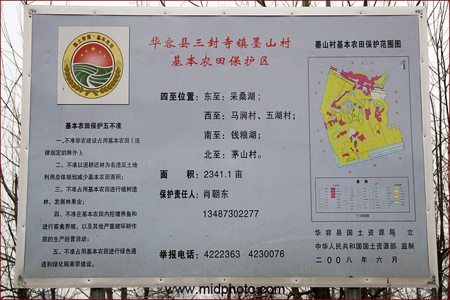
墨山村农田保护区
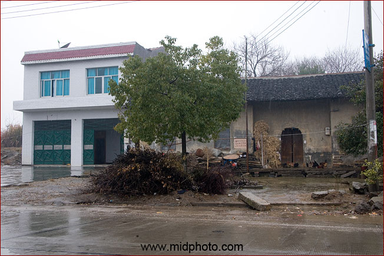
典型的新房子和旧房子
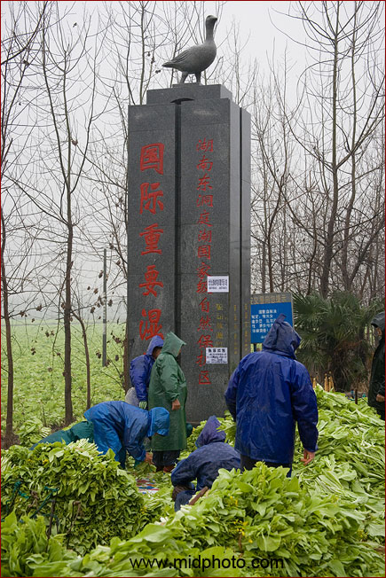
东洞庭湖国家湿地保护区，但马路正在大修，加之大雨，俺就没去了
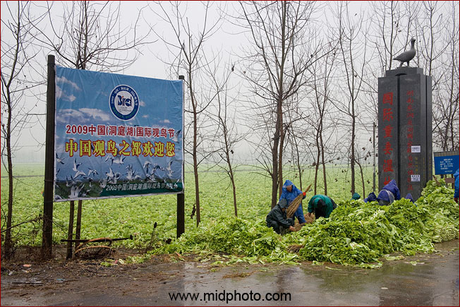
这里是看鸟的好地方，记得带望远镜来
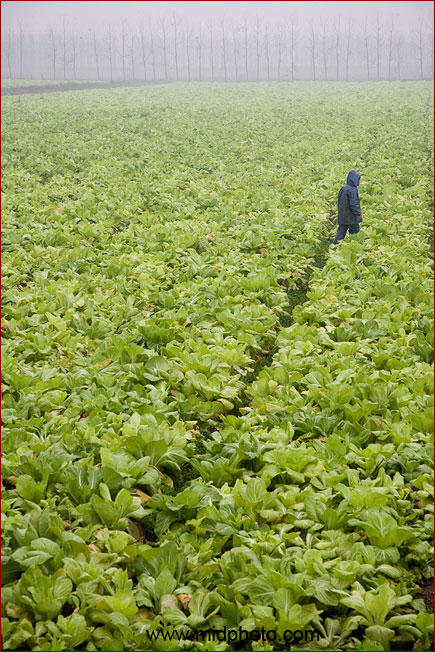
蔬菜的海洋
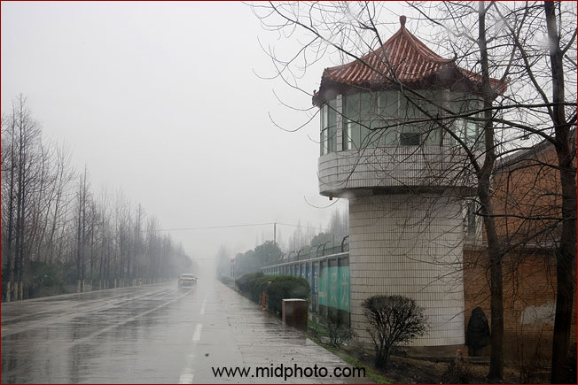
这是监狱的瞭望塔。拍这张照片的时候那个持枪的哨兵一直看着我，好紧张
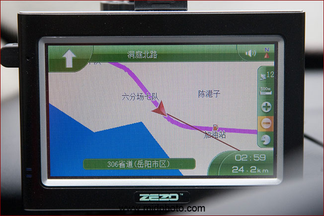
省道306. 前进的道路一直离湖边不远
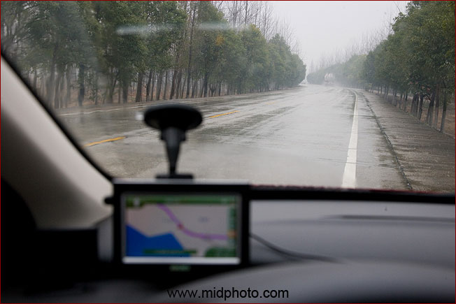
again，车上看不出任何水面的痕迹
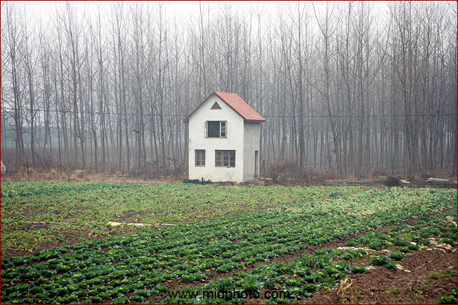
童话般的屋子
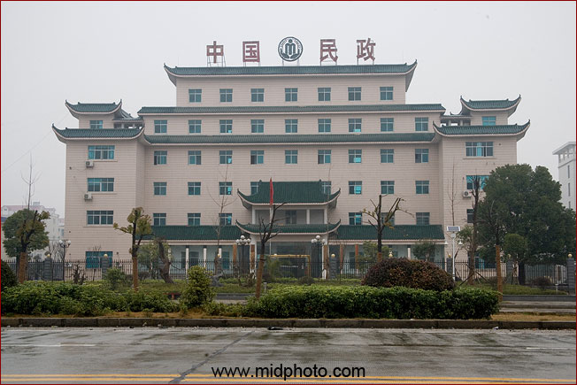
君山区的民政局很气派，但一路很多乞丐没有得到救助
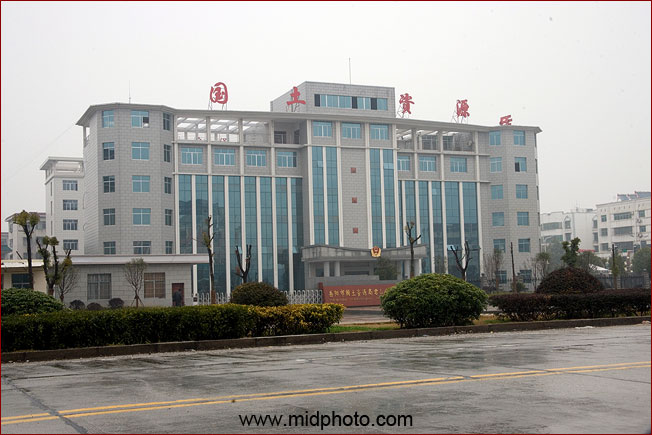
岳阳市君山区国土资源处
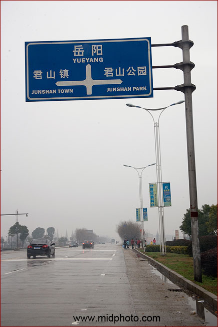
我没去看君山。大雾本来也不好看。中国有文字的历史（信史）也就到商朝为止，夏朝没有文字也没有文物为证。夏朝的历史一半靠猜另一半靠蒙。再往前推，绕舜这种只有神话传说的皇帝可信度
就更低，至于他们的妃子更是无稽之谈，而且还是一夫多妻制，我只有批判的欲望而没有参观的欲望。
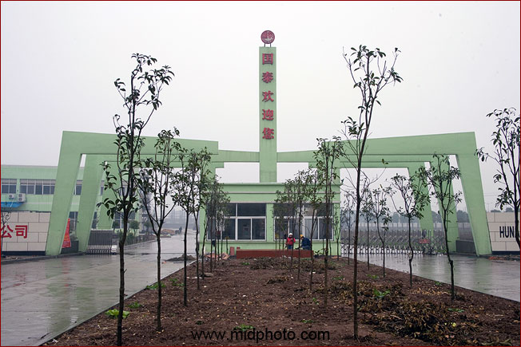
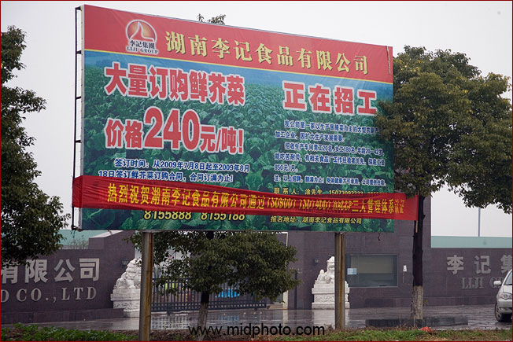
芥菜每斤的收购价才0.12元，再次打击我务农的欲望
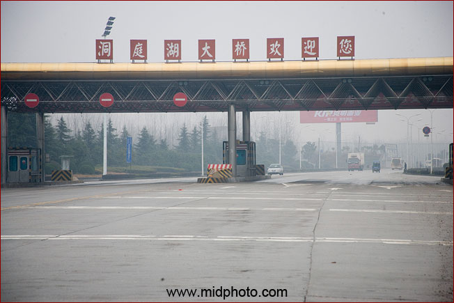
马上就要过此次环洞庭湖最大的一个桥了。巨大的洞庭湖大桥居然不收费
岳阳洞庭湖大桥位于洞庭湖与长江交汇处，东接岳阳市区洞庭大道和107国道、京珠高速公路，西连省道306线，是中国内陆最长的内河公路桥。路桥全长10173.82m，双向四车道，是我国第一座三塔双索面斜拉大桥。大桥总投资80564万元。2000年12月26日建成通车。
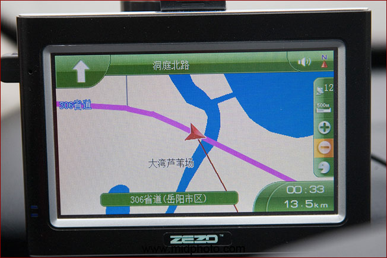
在原洞庭湖大桥收费站的GPS显示
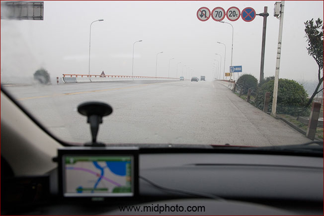
限速70
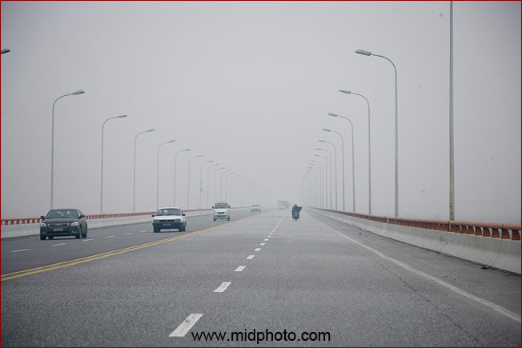
好长的桥
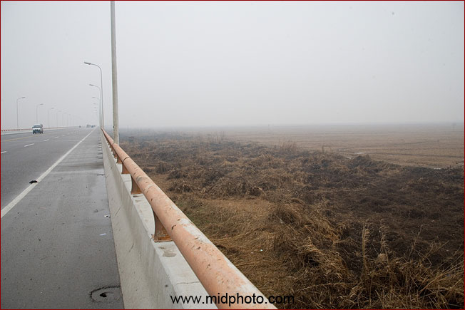
但下面没有水。洪水期才会有
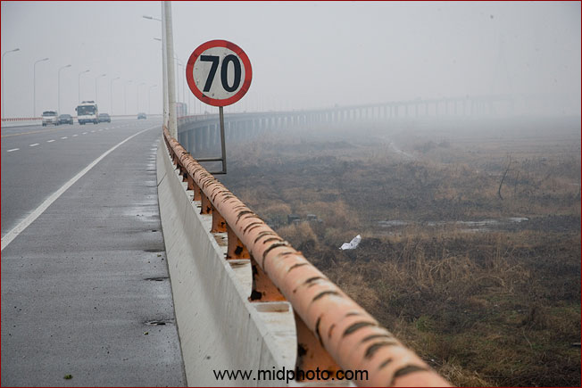
好长的桥
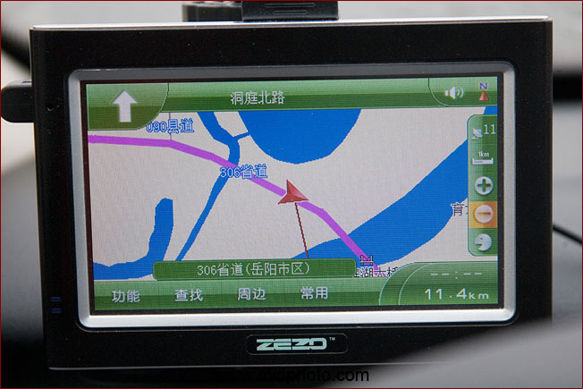
在桥上的GPS显示。大洪水的时候这些陆地都是泽国。
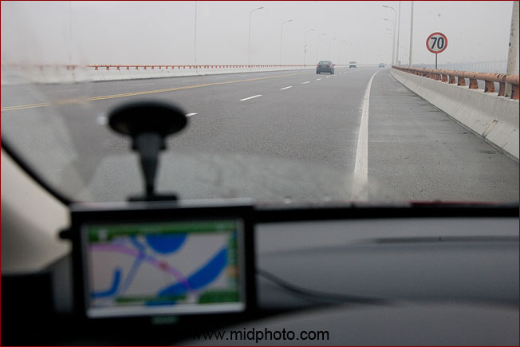
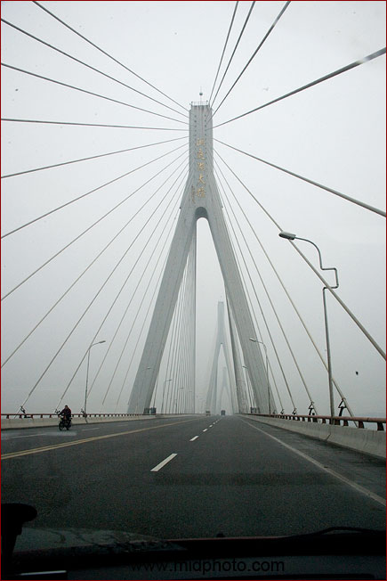
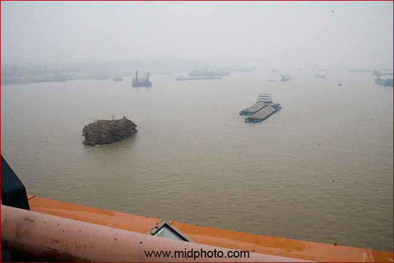
终于在桥的中部看见水了。这里离洞庭湖和长江的接口不远
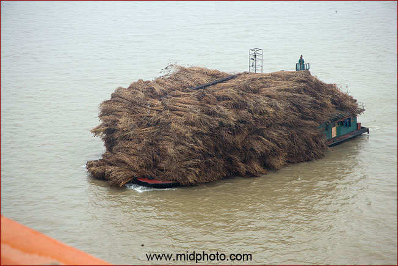
运芦苇的船要加高瞭望塔。便宜的纸张就是来自这些芦苇，洞庭湖的污染一半要归功于造纸厂
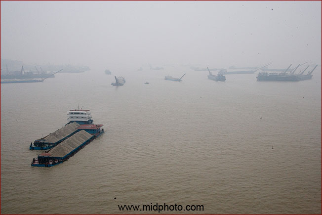
大河气派
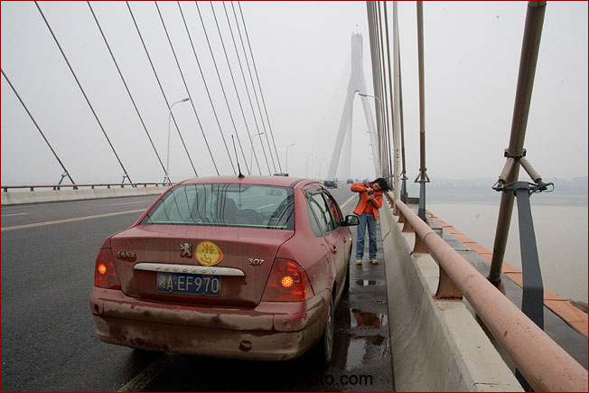
此处停车确实非常危险，来往车速估计有的接近100码
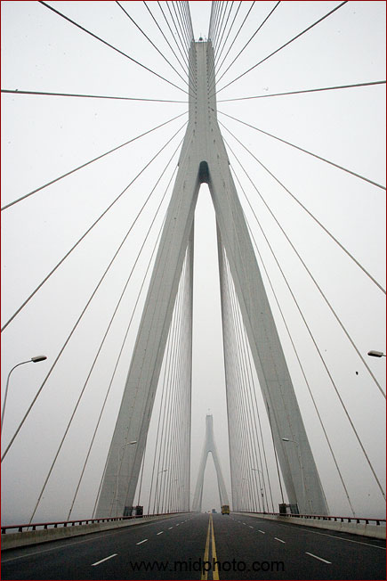
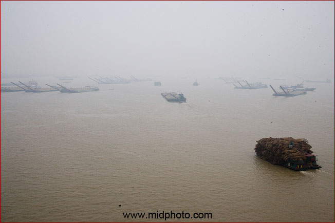
有点八百里洞庭的感觉了
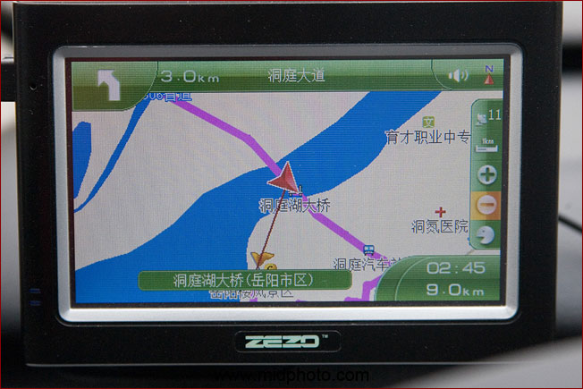
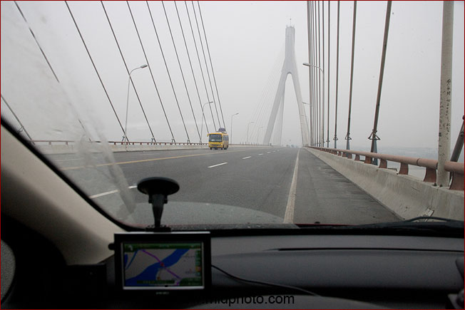
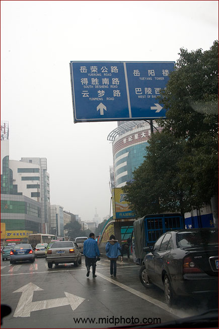
过桥后进入岳阳市区
|